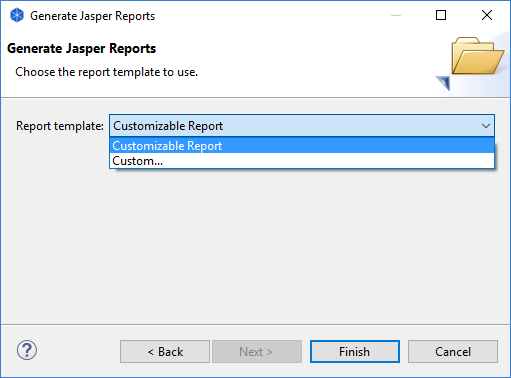

Jasper Reports is the world's most popular Java reporting engine. Combine data sources and produce pixel-perfect documents that can be viewed, printed, or exported into a variety of document formats with this powerful reporting tool. Archi can export models in various formats using Jasper Reports Templates.
This option is available from the "Report->Jasper..." menu item from the main "File" menu. Once a model is selected in the Model Tree or in a View this menu item is enabled. Provide the details in the following wizard page:

Jasper Reports wizard page 1
And then in the next wizard page, choose the report template that you prefer:
Jasper Reports wizard page 2
If you choose the "Customizable Report" template when exporting, then you can set various properties for the report's layout if you base your model on the "Customizable Report" model template when creating a new model. See "Creating a New Model from a Template" for more details.
If you wish to create your own custom Jasper Report templates you can place these in the folder named "jasper-reports" in the application preference folder. You can change the location of this folder in Preferences. Alternatively, you can manually select a template file ("main.jrxml") from the "Choose..." combo option.
An example folder structure for custom reports:
C:\Users\Bagpuss\Application Data\Archi\jasper-reports
|------My Custom Report
|------main.jrxml
|------style.jrxt
|------other files...
For more information on creating custom Jasper Reports please refer to the developer section of the Archi website.
The following is an example of a PDF format report:
Part of a Generated Jasper Report in PDF format